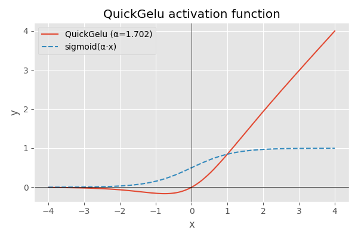

Note
Go to the end to download the full example code.
ExtendedReferenceEvaluator: running models with contrib operators#
ExtendedReferenceEvaluator extends
onnx.reference.ReferenceEvaluator with additional operator kernels for
non-standard domains such as com.microsoft.
This makes it possible to execute and test ONNX models that contain ONNX
Runtime contrib operators (e.g. FusedMatMul, QuickGelu) without
needing a full ONNX Runtime installation just for unit-testing an
optimization pattern.
This example shows:
Running a model with standard ONNX operators.
Running a model that uses the
FusedMatMulcontrib operator.Running a model that uses the
QuickGelucontrib operator.Adding a custom operator implementation via
new_ops.
import numpy as np
import onnx
import onnx.helper as oh
from yobx.reference import ExtendedReferenceEvaluator
TFLOAT = onnx.TensorProto.FLOAT
1. Standard ONNX operators#
ExtendedReferenceEvaluator is a drop-in replacement for
onnx.reference.ReferenceEvaluator. Any model that runs
with the standard evaluator also runs here.
model_add = oh.make_model(
oh.make_graph(
[oh.make_node("Add", ["X", "Y"], ["Z"])],
"add_graph",
[
oh.make_tensor_value_info("X", TFLOAT, [None, None]),
oh.make_tensor_value_info("Y", TFLOAT, [None, None]),
],
[oh.make_tensor_value_info("Z", TFLOAT, [None, None])],
),
opset_imports=[oh.make_opsetid("", 18)],
ir_version=10,
)
x = np.array([[1.0, 2.0], [3.0, 4.0]], dtype=np.float32)
ref = ExtendedReferenceEvaluator(model_add)
(result,) = ref.run(None, {"X": x, "Y": x})
print("Add result:\n", result)
assert np.allclose(result, x + x)
Add result:
[[2. 4.]
[6. 8.]]
2. FusedMatMul (com.microsoft contrib operator)#
FusedMatMul is an ONNX Runtime contrib operator that fuses a matrix
multiplication with optional transpositions. The standard
onnx.reference.ReferenceEvaluator does not know about it, but
ExtendedReferenceEvaluator does.
model_fmm = oh.make_model(
oh.make_graph(
[oh.make_node("FusedMatMul", ["X", "Y"], ["Z"], domain="com.microsoft")],
"fused_matmul_graph",
[
oh.make_tensor_value_info("X", TFLOAT, None),
oh.make_tensor_value_info("Y", TFLOAT, None),
],
[oh.make_tensor_value_info("Z", TFLOAT, None)],
),
opset_imports=[oh.make_opsetid("", 18), oh.make_opsetid("com.microsoft", 1)],
)
a = np.arange(4, dtype=np.float32).reshape(2, 2)
ref_fmm = ExtendedReferenceEvaluator(model_fmm)
(z,) = ref_fmm.run(None, {"X": a, "Y": a})
print("FusedMatMul result:\n", z)
assert np.allclose(z, a @ a)
FusedMatMul result:
[[ 2. 3.]
[ 6. 11.]]
With transA=1 the first operand is transposed before the multiplication.
model_fmm_t = oh.make_model(
oh.make_graph(
[oh.make_node("FusedMatMul", ["X", "Y"], ["Z"], domain="com.microsoft", transA=1)],
"fused_matmul_transA_graph",
[
oh.make_tensor_value_info("X", TFLOAT, None),
oh.make_tensor_value_info("Y", TFLOAT, None),
],
[oh.make_tensor_value_info("Z", TFLOAT, None)],
),
opset_imports=[oh.make_opsetid("", 18), oh.make_opsetid("com.microsoft", 1)],
)
ref_fmm_t = ExtendedReferenceEvaluator(model_fmm_t)
(z_t,) = ref_fmm_t.run(None, {"X": a, "Y": a})
print("FusedMatMul(transA=1) result:\n", z_t)
assert np.allclose(z_t, a.T @ a)
FusedMatMul(transA=1) result:
[[ 4. 6.]
[ 6. 10.]]
3. QuickGelu (com.microsoft contrib operator)#
QuickGelu applies the gated sigmoid activation
x * sigmoid(alpha * x) element-wise.
model_gelu = oh.make_model(
oh.make_graph(
[oh.make_node("QuickGelu", ["X"], ["Z"], domain="com.microsoft", alpha=1.702)],
"quick_gelu_graph",
[oh.make_tensor_value_info("X", TFLOAT, None)],
[oh.make_tensor_value_info("Z", TFLOAT, None)],
),
opset_imports=[oh.make_opsetid("", 18), oh.make_opsetid("com.microsoft", 1)],
)
x_gelu = np.array([-2.0, -1.0, 0.0, 1.0, 2.0], dtype=np.float32)
ref_gelu = ExtendedReferenceEvaluator(model_gelu)
(z_gelu,) = ref_gelu.run(None, {"X": x_gelu})
print("QuickGelu result:", z_gelu)
QuickGelu result: [-0.06434137 -0.15420423 0. 0.84579575 1.9356586 ]
4. Adding a custom operator via new_ops#
Any OpRun subclass can be passed
through the new_ops argument. The built-in default_ops are
always merged in automatically, so you only need to list your additions.
from onnx.reference.op_run import OpRun # noqa: E402
class Scale(OpRun):
"""Multiplies every element of X by a constant *factor*."""
op_domain = "my.domain"
def _run(self, X, factor=2.0): # type: ignore[override]
return (X * np.float32(factor),)
model_custom = oh.make_model(
oh.make_graph(
[oh.make_node("Scale", ["X"], ["Z"], domain="my.domain", factor=3.0)],
"scale_graph",
[oh.make_tensor_value_info("X", TFLOAT, [None])],
[oh.make_tensor_value_info("Z", TFLOAT, [None])],
),
opset_imports=[oh.make_opsetid("", 18), oh.make_opsetid("my.domain", 1)],
ir_version=10,
)
x_s = np.array([1.0, 2.0, 3.0], dtype=np.float32)
ref_custom = ExtendedReferenceEvaluator(model_custom, new_ops=[Scale])
(z_s,) = ref_custom.run(None, {"X": x_s})
print("Scale(factor=3) result:", z_s)
assert np.allclose(z_s, x_s * 3.0)
Scale(factor=3) result: [3. 6. 9.]
5. Listing the default operators#
default_ops shows all operator implementations that are
registered automatically.
import pprint # noqa: E402
pprint.pprint(ExtendedReferenceEvaluator.default_ops)
[<class 'yobx.reference.ops.op__overwrite_gather.Gather'>,
<class 'yobx.reference.ops.op__overwrite_gather_elements.GatherElements'>,
<class 'yobx.reference.ops.op__overwrite_scatter_elements.ScatterElements'>,
<class 'yobx.reference.ops.op_attention.Attention'>,
<class 'yobx.reference.ops.op_bias_softmax.BiasSoftmax'>,
<class 'yobx.reference.ops.op_complex.ComplexModule'>,
<class 'yobx.reference.ops.op_complex.ComplexMul'>,
<class 'yobx.reference.ops.op_complex.ComplexMulConj'>,
<class 'yobx.reference.ops.op_complex.Istft'>,
<class 'yobx.reference.ops.op_fast_gelu.FastGelu'>,
<class 'yobx.reference.ops.op_fused_matmul.FusedMatMul'>,
<class 'yobx.reference.ops.op_fused_matmul_activation.FusedMatMulActivation'>,
<class 'yobx.reference.ops.op_gemm_fast_gelu.GemmFastGelu'>,
<class 'yobx.reference.ops.op_memcpy_host.MemcpyFromHost'>,
<class 'yobx.reference.ops.op_memcpy_host.MemcpyToHost'>,
<class 'yobx.reference.ops.op_qlinear_conv.QLinearConv'>,
<class 'yobx.reference.ops.op_qlinear_average_pool.QLinearAveragePool'>,
<class 'yobx.reference.ops.op_quick_gelu.QuickGelu'>,
<class 'yobx.reference.ops.op_simplified_layer_normalization.SimplifiedLayerNormalization'>,
<class 'yobx.reference.ops.op_skip_layer_normalization.SkipLayerNormalization'>,
<class 'yobx.reference.ops.op_complex.ToComplex'>,
<class 'yobx.reference.ops.op__extended_add_add_mul_mul.AddAdd'>,
<class 'yobx.reference.ops.op__extended_add_add_mul_mul.AddMul'>,
<class 'yobx.reference.ops.op__extended_add_add_mul_mul.AddSharedInput'>,
<class 'yobx.reference.ops.op__extended_scatternd_of_shape.MaskedScatterNDOfShape'>,
<class 'yobx.reference.ops.op__extended_add_add_mul_mul.MulAdd'>,
<class 'yobx.reference.ops.op__extended_add_add_mul_mul.MulMul'>,
<class 'yobx.reference.ops.op__extended_add_add_mul_mul.MulSharedInput'>,
<class 'yobx.reference.ops.op__extended_mul_sigmoid.MulSigmoid'>,
<class 'yobx.reference.ops.op__extended_add_add_mul_mul.MulSub'>,
<class 'yobx.reference.ops.op__extended_negxplus1.NegXplus1'>,
<class 'yobx.reference.ops.op__extended_replace_zero.ReplaceZero'>,
<class 'yobx.reference.ops.op__extended_rotary.Rotary'>,
<class 'yobx.reference.ops.op__extended_scatternd_of_shape.ScatterNDOfShape'>,
<class 'yobx.reference.ops.op__extended_add_add_mul_mul.SubMul'>,
<class 'yobx.reference.ops.op__extended_transpose_cast.Transpose2DCastFP16'>,
<class 'yobx.reference.ops.op__extended_transpose_cast.Transpose2DCastFP32'>,
<class 'yobx.reference.ops.op__extended_tri_matrix.TriMatrix'>]
6. Plot: QuickGelu activation curve#
The QuickGelu function x * sigmoid(alpha * x) is plotted below
alongside a plain sigmoid and the identity line for comparison.
import matplotlib.pyplot as plt # noqa: E402
alpha = 1.702
x_plot = np.linspace(-4, 4, 200).astype(np.float32)
sigmoid = 1.0 / (1.0 + np.exp(-alpha * x_plot))
quick_gelu_vals = x_plot * sigmoid
fig, ax = plt.subplots(figsize=(6, 4))
ax.plot(x_plot, quick_gelu_vals, label="QuickGelu (α=1.702)")
ax.plot(x_plot, sigmoid, linestyle="--", label="sigmoid(α·x)")
ax.axhline(0, color="k", linewidth=0.5)
ax.axvline(0, color="k", linewidth=0.5)
ax.set_xlabel("x")
ax.set_ylabel("y")
ax.set_title("QuickGelu activation function")
ax.legend()
plt.tight_layout()
plt.show()

Total running time of the script: (0 minutes 0.074 seconds)
Related examples

Computation Cost: How It Works and Supported Operator Formulas